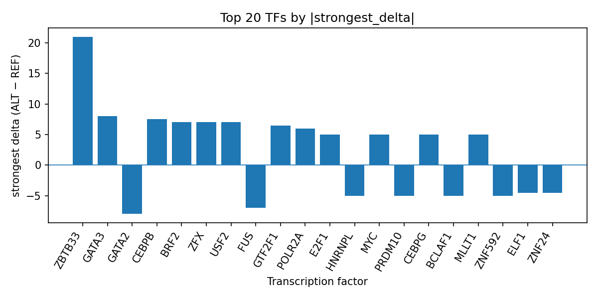

Author: snv-tf-researcher
Genome-wide association studies can nominate non-coding variants whose regulatory consequences are not immediately evident. Here, we interpreted the GWAS-selected SNV rs1461746208 (12:76372081 T>C), which was prioritized by effect size for breast benign neoplasm, using AlphaGenome transcription factor (TF) ChIP-seq predictions. Because AlphaGenome provides computational predictions rather than experimental measurements, the results should be viewed as hypothesis-generating and require experimental validation.
The predicted allele substitution was associated with a mixed TF perturbation profile, with the strongest positive effect for ZBTB33 and notable predicted changes in GATA2, GATA3, CEBPB, BRF2, ZFX, USF2, POLR2A, MYC, and several additional TFs. The overall pattern suggests that this intronic/upstream/non-coding-transcript variant may alter regulatory protein occupancy across multiple contexts rather than acting through a single TF. The analysis also aligns with the run-level summary in top_tf_effects.tsv, which prioritizes TFs by predicted binding change. Given the non-coding location and the absence of a mapped nearest gene in the provided data, these predictions may help prioritize downstream mechanistic testing in breast-relevant systems.
Benign breast neoplasms are clinically relevant lesions within the broader spectrum of breast pathology, and prior literature in the provided list includes studies on benign breast tumors, risk assessment, and breast cancer-related biology. However, the present analysis is focused on a single GWAS-nominated SNV and its predicted transcriptional regulatory effects rather than on disease incidence or clinical outcomes [1-4].
Non-coding GWAS variants are often interpreted through their effects on cis-regulatory elements and transcription factor occupancy. Computational models such as AlphaGenome can support this task by predicting allelic differences in TF ChIP-seq signal, but such outputs are not measurements and must be experimentally verified. In addition, a GWAS-selected variant may be in linkage disequilibrium with the true causal variant, so any mechanistic interpretation remains provisional. Prior studies in the provided list also underscore that breast cancer genetics can reflect complex, context-dependent regulatory signals, including locus-level effects and subtype-specific associations [5-9].
We analyzed the candidate SNV rs1461746208 on chromosome 12 at position 76,372,081 (T>C), which was selected for breast benign neoplasm based on its reported effect size (absolute beta 6.652) and p value (1×10^-13). The provided consequence annotations were intron_variant, upstream_gene_variant, and non_coding_transcript_variant. No nearest genes were supplied.
The analysis followed the run workflow summarized in the pipeline figure, which includes disease and association retrieval, effect-size ranking and SNV filtering, Ensembl VEP consequence annotation and REF allele checking, AlphaGenome TF ChIP-seq prediction, TF-level summarization, PubMed literature search, and manuscript synthesis (Figure 1). AlphaGenome TF ChIP-seq outputs were treated as computational predictions rather than experimental measurements. TF-level results were summarized using the provided top_tf_effects.tsv run output, which reports the number of supporting tracks, strongest signed delta, mean and median deltas, and the number of predicted promoted versus inhibited tracks for each TF.
Figure 1. Workflow for the SNV-to-TF interpretation pipeline. The figure summarizes disease/association retrieval, variant prioritization, sequence consequence annotation, AlphaGenome TF ChIP-seq prediction, TF ranking, literature search, and manuscript generation.
The AlphaGenome TF ChIP-seq predictions for rs1461746208 indicated a heterogeneous regulatory signature rather than uniform gain or loss of binding. Among the top TF-level summaries, ZBTB33 showed the strongest positive predicted effect, with a maximum signed delta of 21.0 across five tracks, while GATA2 showed a net inhibitory direction with a strongest delta of -8.0 across six tracks. GATA3 was predicted to be promoted, as were CEBPB, BRF2, ZFX, USF2, GTF2F1, POLR2A, MLLT1, CEBPG, SUPT5H, RBM22, MYC, and others, whereas FUS, ZNF592, BCLAF1, PRDM10, HNRNPL, ELF1, ZNF24, FOXA3, ZNF217, NFYB, AGO1, TCF12, GATAD2B, RBM17, and ZNF121 were predicted to be inhibited. The strongest single-track signals included ZBTB33 in K562, GATA2 in SK-N-SH, GATA3 in MCF-7, CEBPB in K562, and POLR2A in K562. This distribution is consistent with a variant that can alter binding across multiple TF families and cellular contexts rather than a single lineage-limited effect. The run-level prioritization is reflected in top_tf_effects.tsv, which records the same TF summary statistics used here.

Figure 2. Top transcription factors at rs1461746208 ranked by absolute predicted ALT-versus-REF binding delta from AlphaGenome TF ChIP-seq tracks. Bars show the strongest signed delta per TF, with positive values indicating predicted promotion and negative values indicating predicted inhibition.
The strongest predicted TF-level effects from the provided run summary were:
Additional TFs with predicted inhibition included ZNF592, BCLAF1, PRDM10, HNRNPL, ELF1, ZNF24, FOXA3, ZNF217, NFYB, AGO1, TCF12, GATAD2B, RBM17, and ZNF121. The presence of both promoted and inhibited TFs suggests allele-specific remodeling of the local regulatory environment.
The rs1461746208 T>C substitution is predicted to influence multiple TF ChIP-seq signals, including ZBTB33, GATA family factors, CEBPB, BRF2, ZFX, USF2, POLR2A, and MYC. In a non-coding GWAS context, such a pattern suggests possible disruption or creation of regulatory grammar rather than an isolated effect on a single binding site. The prominence of POLR2A and MYC in the predicted output may be consistent with broad transcriptional regulatory involvement, but this interpretation remains computational and does not establish mechanism [10,11].
The breast-related literature provided with this run spans benign lesions, screening/risk assessment, and breast cancer genetics, underscoring that breast phenotypes are influenced by layered biological and clinical factors [1-4,12-15]. Some cited studies also highlight that genetic architecture, imputation strategy, and locus-level regulatory analysis can materially affect variant interpretation in breast disease [5-9,16-18]. Within that broader context, the present AlphaGenome result prioritizes rs1461746208 as a candidate regulatory variant for follow-up. However, because AlphaGenome outputs are predictions rather than direct chromatin measurements, experimental validation is required to confirm whether the substitution alters TF occupancy or downstream gene regulation.
This analysis has several limitations. First, the candidate SNV was selected by effect size, and it may be in linkage disequilibrium with the true causal variant rather than being causal itself. Second, the predictions come from AlphaGenome TF ChIP-seq tracks and therefore represent computational outputs, not experimentally measured binding. Third, no nearest gene was provided in the input, limiting gene-level interpretation. Fourth, the provided literature list includes studies on breast cancer and benign breast disease, but no paper directly addresses rs1461746208, so the discussion is necessarily limited to general interpretive context rather than variant-specific prior evidence. Finally, no experimental validation was available here, so all mechanistic statements remain provisional and hypothesis-generating.